Yikang Ding - 丁宜康
Email: dingyikang23@gmail.com [GitHub] [Google Scholar] |
I am currently a researcher in Megvii, where I am working on the task of 3D reconstruction, world model and generative model. Before that, I got my master's degree and bachelor's degree at Tsinghua University and Beihang University. If you have any interest, please feel free to contact me.
(* denotes equal contribution, ✝ denotes project leader.)
| 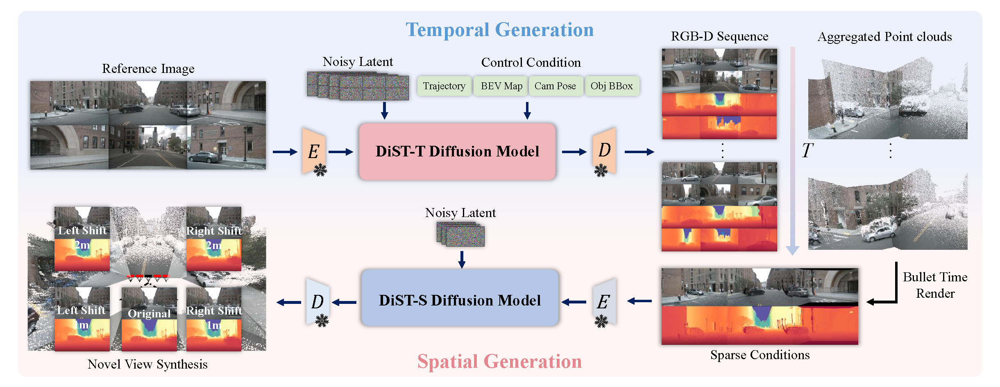 | DiST-4D: Disentangled Spatiotemporal Diffusion with Metric Depth for 4D Driving Scene Generation Jiazhe Guo*, Yikang Ding*✝ , Xiwu Chen, Shuo Chen, Bohan Li, Yingshuang Zou, Xiaoyang Lyu, Feiyang Tan, Xiaojuan Qi, Zhiheng Li, Hao Zhao Arxiv Preprint 2025 |
| 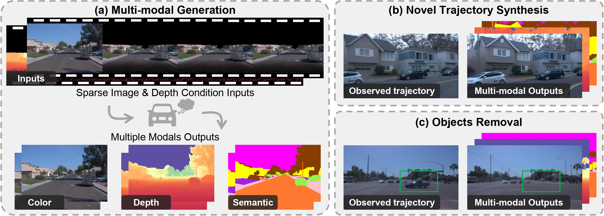 | MuDG: Taming Multi-modal Diffusion with Gaussian Splatting for Urban Scene Reconstruction Yingshuang Zou*, Yikang Ding*✝ , Chuanrui Zhang, Jiazhe Guo, Bohan Li, Xiaoyang Lyu, Feiyang Tan, Xiaojuan Qi, Haoqian Wang Arxiv Preprint 2025 |
| 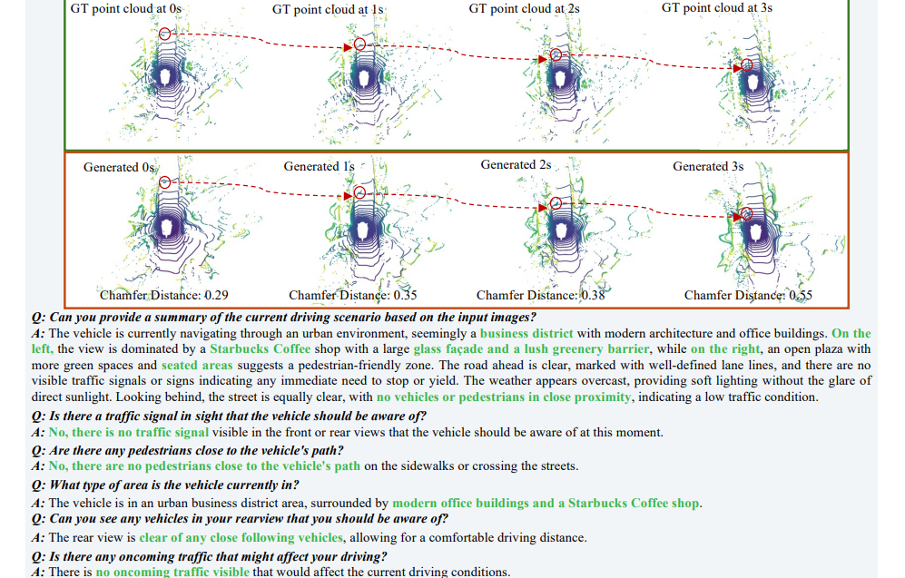 | HERMES: A Unified Self-Driving World Model for Simultaneous 3D Scene Understanding and Generation Xin Zhou*, Dingkang Liang*✝, Sifan Tu, Xiwu Chen, Yikang Ding✝ , Dingyuan Zhang, Feiyang Tan, Hengshuang Zhao, Xiang Bai Arxiv Preprint 2025 |
| 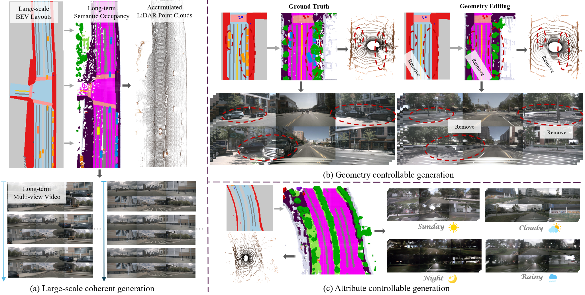 | UniScene: Unified Occupancy-centric Driving Scene Generation Bohan Li*, Jiazhe Guo*, Hongsi Liu*, Yingshuang Zou*, Yikang Ding*✝ , Xiwu Chen, Hu Zhu, Other authors IEEE/CVF Conference on Computer Vision and Pattern Recognition (CVPR 2025) |
| 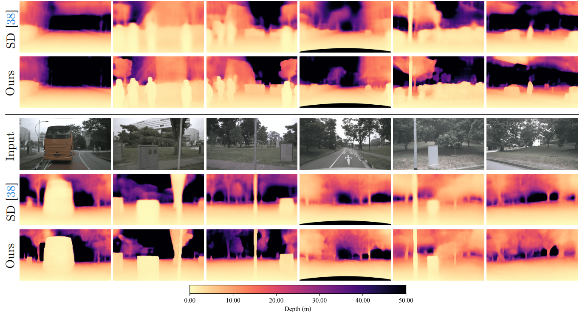 | M2Depth: Self-supervised Two-Frame Multi-camera Metric Depth Estimation Yingshuang Zou*, Yikang Ding*✝ , Xi Qiu, Haoqian Wang, Haotian Zhang European Conference on Computer Vision (ECCV 2024 Oral) |
| 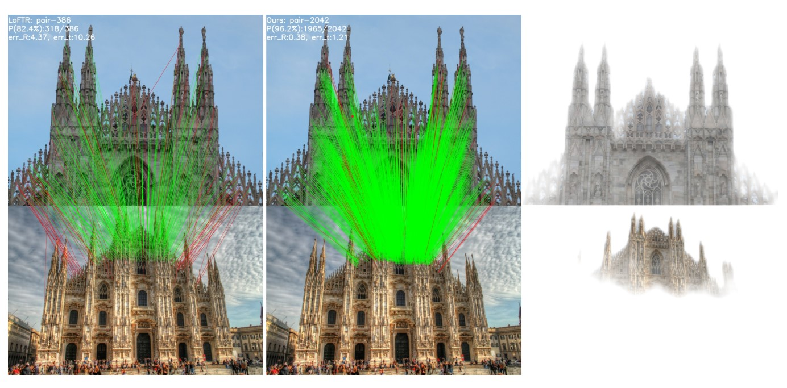 | Adaptive Assignment for Geometry Aware Local Feature Matching Dihe Huang, Ying Chen, Shang Xu, Yong Liu, Wenlong Wu, Yikang Ding , Chengjie Wang, Fan Tang IEEE/CVF Conference on Computer Vision and Pattern Recognition (CVPR 2023) |
| 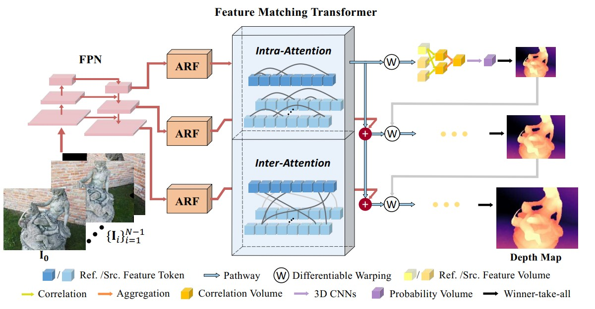 | TransMVSNet: Global Context-aware Multi-view Stereo Network with Transformers Yikang Ding* , Wentao Yuan*, Qingtian Zhu, Haotian Zhang, Xiangyue Liu, Yuanjiang Wang, Xiao Liu IEEE/CVF Conference on Computer Vision and Pattern Recognition (CVPR 2022) |
| 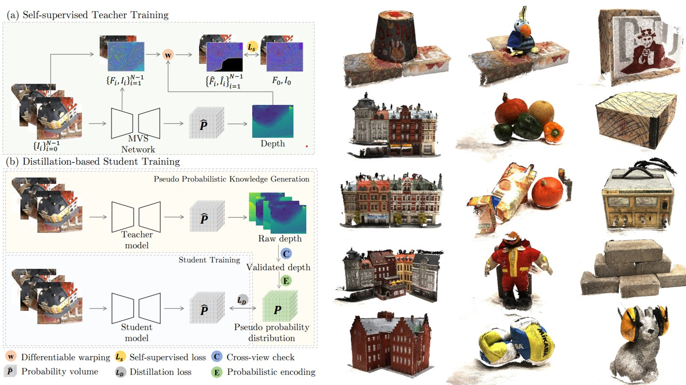 | KD-MVS: Knowledge Distillation Based Self-supervised Learning for Multi-view Stereo Yikang Ding , Qingtian Zhu, Xiangyue Liu, Wentao Yuan, Haotian Zhang, Chi Zhang European Conference on Computer Vision (ECCV 2022) |
| 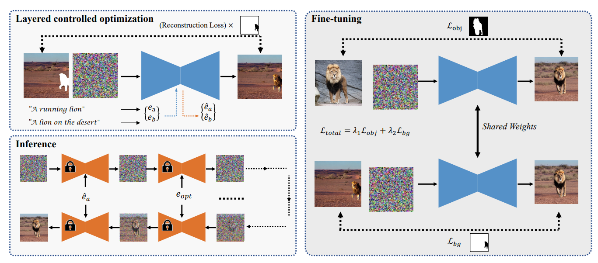 | LayerDiffusion: Layered Controlled Image Editing with Diffusion Models Pengzhi Li, Qinxuan Huang, Yikang Ding, Zhiheng Li SIGGRAPH Asia 2023 Technical Communications (SIGGRAPH Asia 2023) |
| 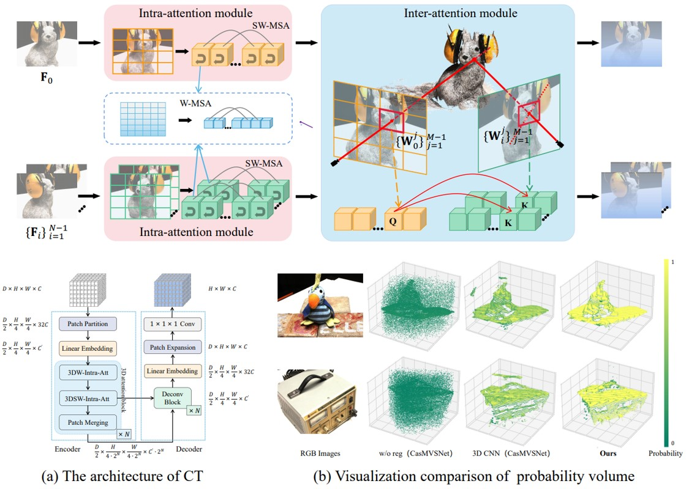 | WT-MVSNet: Window-based Transformers for Multi-view Stereo Jinli Liao*, Yikang Ding* , Yoli Shavit, Dihe Huang, Shihao Ren, Jia Guo, Wensen Feng, Kai Zhang Thirty-sixth Conference on Neural Information Processing Systems (NeurIPS 2022) |
| 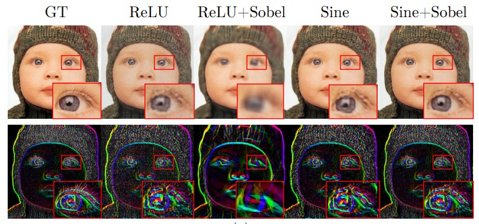 | Sobolev Training for Implicit Neural Representations with Approximated Image Derivatives Wentao Yuan, Qingtian Zhu, Xiangyue Liu, Yikang Ding , Haotian Zhang, Chi Zhang European Conference on Computer Vision (ECCV 2022) |
Conference Reviewer:
CVPR 2022-, ECCV 2022-, AAAI 2023-, ACCV 2022-, 3DV 2022-